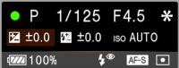

| 1 |
Check to see that the camera settings are loaded in the operation panel.
 If the camera settings are not displayed
Check to see if the camera is properly connected.
|
|---|---|
| 2 |
Click (MOVIE Button).
A movie is shot. The captured movies are saved to the memory card of the camera. |